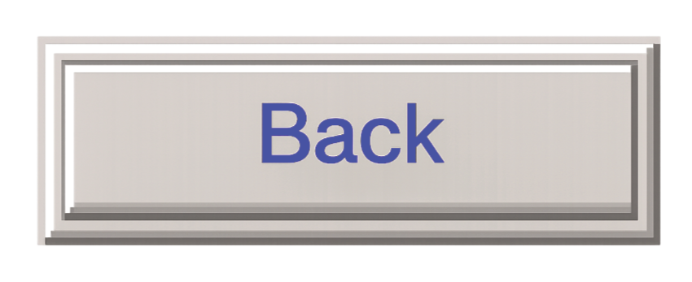

Title: Fountain for Golfers
Year: 2025
Medium: PVC, metal, fake grass, waterpump
Showed at: Aqua Invísivel, Lagos and Pop up event: The Museum of Contemporary art of Tuvalu, Agueda
In Lagos (Portugal) specifically one thing popped my eye, the beauty of the green golf courses. And there strong contrast to the dead and dry land around it. While working on the theme of water I thought about that sentence saying “the grass is greener where you water it” meaning, the things you put most attention to will grow the most. This installation is questioning whether that grass should be the one of the golf courts.
